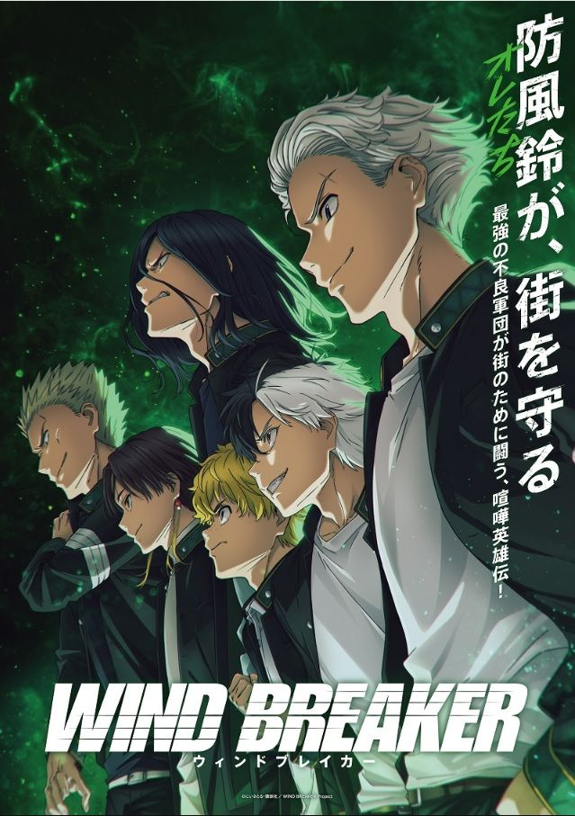
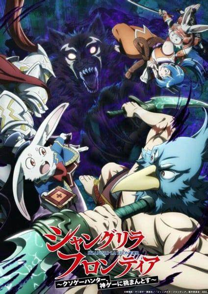
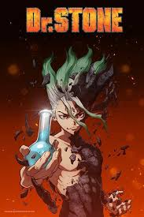
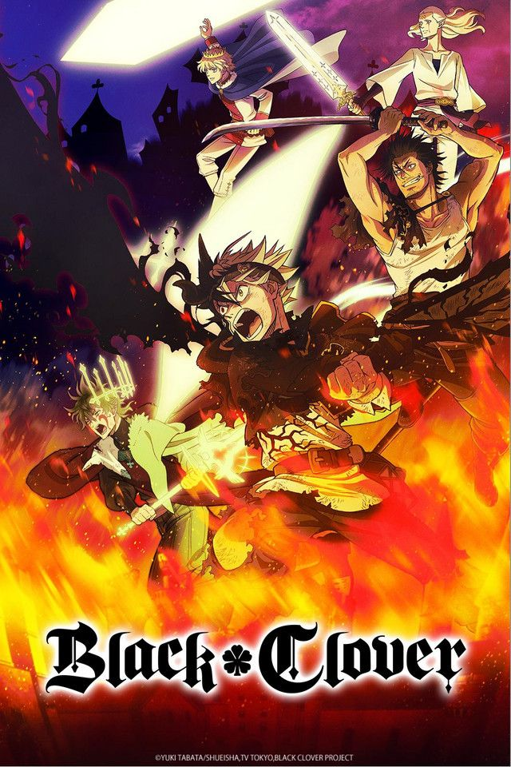
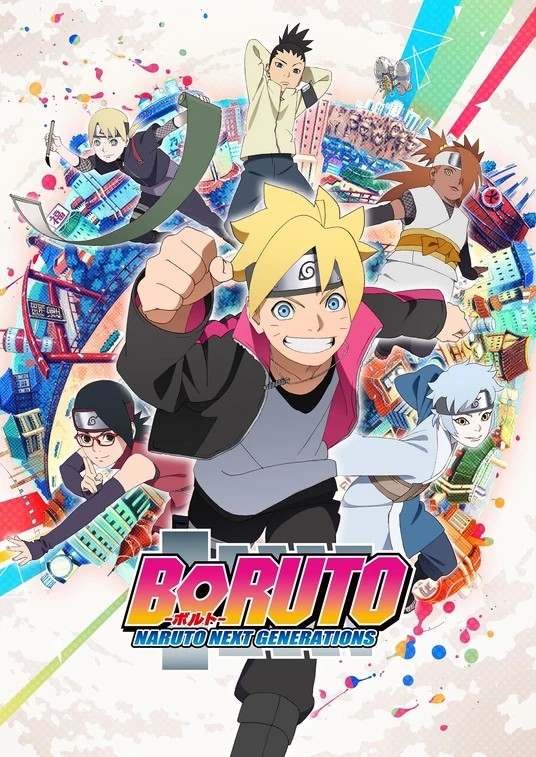
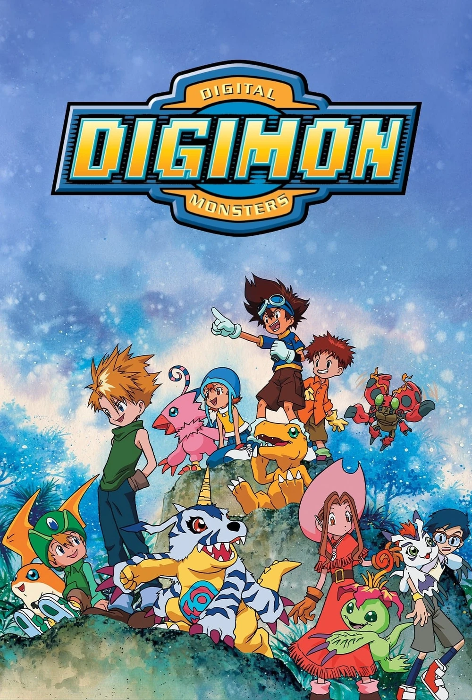
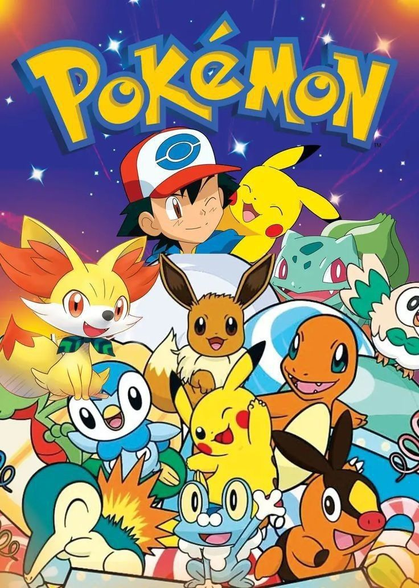
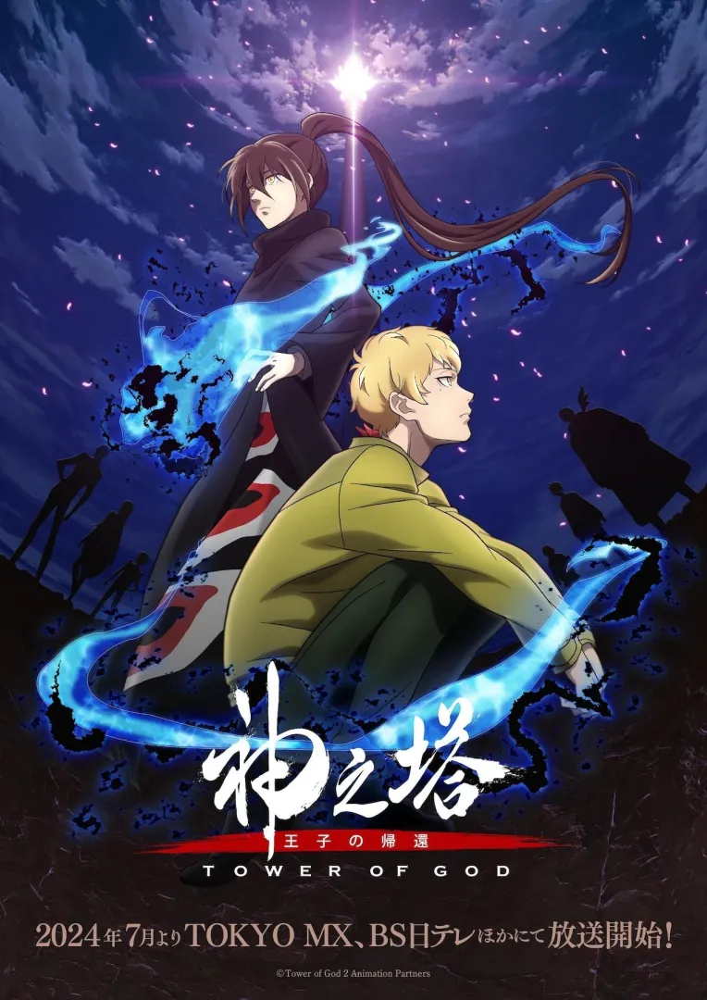

Lo que no te mata te hace más fuerte, pero en el caso de Sung Jinwoo, lo que lo mató lo hizo más fuerte. Después de ser brutalmente asesinado por monstruos en una mazmorra de alto rango, Jinwoo regresó con el Sistema, un programa que solo él puede ver y que eleva su nivel en todos los sentidos. Ahora, está decidido a descubrir los secretos detrás de sus poderes y la mazmorra que los engendró.
Solo Leveling

El lugar donde las calificaciones medias son las peores, pero las peleas son las mejores. La Preparatoria Furin es bien conocida por ser una preparatoria repleta de delincuentes. Haruka Sakura, estudiante de primer año, llega como novato con ganas de abrirse paso luchando hasta lo más alto. Sin embargo, la Preparatoria Furin tiene ahora un grupo que protege las calles de la ciudad con el nombre de “Wind Breaker”. ¡Este es el inicio de la leyenda de Sakura, el delincuente de preparatoria!
Wind Breaker

"¿Cuándo fue la última vez que jugué un juego que no fuera una basura?" Este es un mundo en el futuro cercano donde los juegos que usan pantallas se consideran retro, y muchos juegos de realidad virtual no llegan a un mínimo de calidad: son los llamados "juegos basura". A aquellos que dedican sus vidas a completar estos juegos se les llama "cazadores de juegos basura", y Rakuro Hizutome es uno de ellos. El juego que ha elegido abordar a continuación es Shangri-La Frontier, un juego que goza de una gran crítica y más de 30 millones de jugadores. ¡La mejor historia de aventuras escrita por el jugador más fuerte de "juegos basura" está a punto de comenzar!
Shangri-La Frontier

Senku es un joven extremadamente inteligente con un gran don para la ciencia y una ácida personalidad, y su mejor amigo es Taiju, que es muy buena persona pero más apto para usar los músculos que para pensar. Cuando tras cierto incidente toda la humanidad acaba convertida en piedra, ellos logran despertarse en un mundo miles de años después, con la civilización humana completamente desaparecida y con toda la humanidad congelada en piedra como ellos estuvieron. Ahora es su obligación rescatar a la gente y crear un nuevo mundo.
Dr. Stone
Muchos años atrás, la humanidad estuvo al borde de la extinción con la aparición de unas criaturas gigantes que devoraban a todas las personas. Huyendo, la humanidad consiguió sobrevivir en una ciudad fortificada de altas murallas que se ha convertido en el último reducto de la civilización contra los Titanes que campan a sus anchas por el mundo. Ahora esa paz está a punto de verse interrumpida por una cadena de acontecimientos que llevará a desvelar qué son los Titanes y cómo aparecieron.
Attack on Titans
Aventura
Animes y Mangas populares

En un mundo en el que la magia lo es todo, Asta y Yuno son dos niños que encuentran abandonados el mismo día en una iglesia. Mientras que Yuno crece demostrando tener unos grandes poderes mágicos, Asta parece ser la única persona en el mundo que no posee capacidad mágica alguna. Eso no importará a los dos jóvenes, que aspirarán a alcanzar el puesto de Rey Mago, el mejor mago de todos. Pero para ello tendrán que ser seleccionados primero por una Orden de Caballeros Mágicos, ¡y Asta no tiene magia!
Black Clover

En Konoha han entrado en una era de paz y modernidad. Los altos edificios despuntan en las calles, las pantallas gigantes muestran imágenes de todo tipo y los medios de transporte conectan los vairos distritos. Pese a que sigue siendo una aldea ninja, el número de civiles ha aumentado y la vida de los ninja ha cambiado. Boruto Uzumaki es hijo del Séptimo Hokage, Naruto Uzumaki, y se ha unido a la Academia Ninja para aprender. Otros estudiantes lo menosprecian de inmediato y consideran que solo está ahí por ser "hijo del Hokage", pero pronto Boruto disipará todas esas dudas sobre él.
Boruto Next Generations

Estando en un campamento de verano, siete niños se encuentran con unos misteriosos dispositivos y una luz los transporta a un extraño Mundo Digital. En este nuevo mundo forjarán amistad con unas criaturas llamadas Digimon y con las que lucharán para derrotar a las fuerzas malvadas que amenazan tanto el Mundo Digital como el mundo real.
Digimon Adventure

Con tan solo 10 años, Ash aspira a ser el mejor entrenador de Pokémon del mundo. Para ello, cuenta con la ayuda de sus dos inseparables amigos, Misty y Brock, y su primer e inseparable pokémon, Pikachu. Juntos, tienen que recorrer todo el mundo para buscar y capturar a las más de 150 criaturas que deambulan por el mundo. Además, Ash y compañía tendrán que evitar a los temibles, pero absurdos, Team Rocket, y a uno de los pokémon más peligrosos de todos, Meowth.
Pokemon

Alcanza la lo más alto y todo será tuyo.
En la cima de la torre encontrarás todo lo que existe en este mundo, y todo puede ser tuyo.
Podrás ser un dios.
Esta es la historia del inicio y el final de Rachel, la joven que ascendió la torre para poder ver las estrellas, y Bam, el joven que lo único que necesitaba era estar con ella.